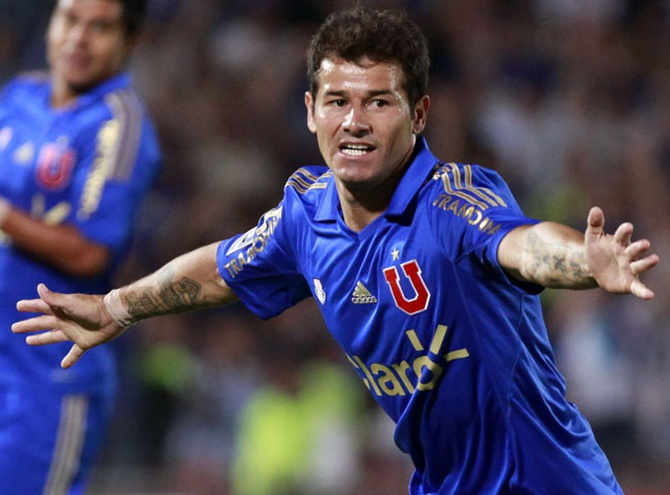
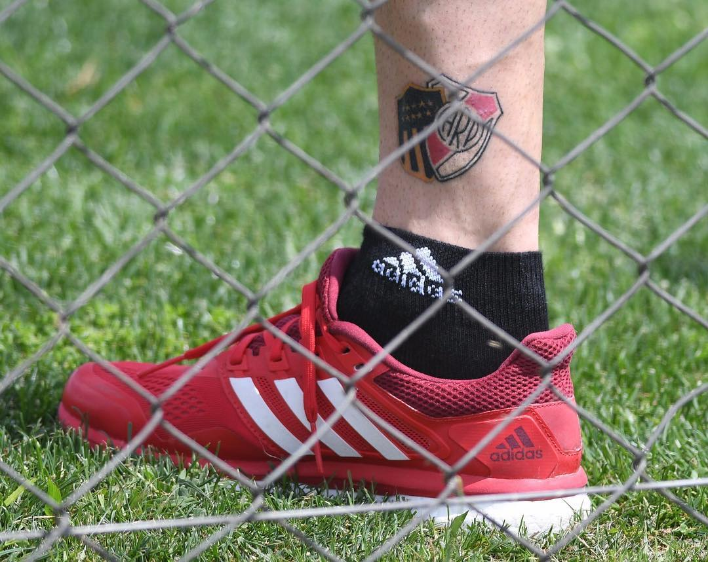

El delantero, en plena recuperación, decidió que el Millonario lo acompañe por el resto de su vida y ahora lleva los colores del Más Grande tatuados. ¡Mirá cómo le quedó!
Llegó siendo desconocido en el fútbol argentino allá por mediados de 2012 y, de allí en más, decidió quedarse en Núñez para cosechar alegrías. Rodrigo Mora lleva más de cinco años -sólo interrumpidos un semestre en 2014- en River y ya es un Millonario más.
Con 154 partidos oficiales, 37 goles y 6 títulos -todos los del ciclo de Marcelo Gallardo-, el charrúa ya está en la historia del Más Grande. Pero el cariño es mutuo y Mora decidió dejarlo impreso en su piel para toda la vida.
Hace pocos días, el delantero decidió tatuarse en el tobillo los escudos de Peñarol, club en el jugó y del cual es hincha en Uruguay, y River, donde logró afianzarse como un delantero de calidad y pasó los mejores momentos de una carrera creciente.
Hoy, a los 30 años, está por ganar el partido más complicado que le tocó jugar. Lleva un semestre inactivo, pero no se rinde, porque quiere volver a ponerse La Banda. Eso sí, pase lo que pase, llevará a River consigo para siempre